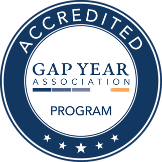
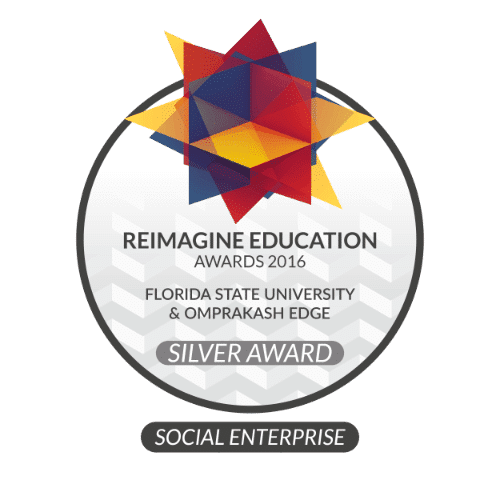

I really loved how Omprakash EdGE opened my eyes to a whole new world of international aid, public health, anthropology, and research that I've never known about. It has inspired me to differentiate my paths in life and I love the way the program is structured.
And check out our Honors & Awards:

Dedicated One-on-One Mentorship
Capstone Projects
Concentrations

Certification
Ethical Global Partnerships
Ethical Global Partnerships
Omprakash is a network of 200 autonomous grassroots social change organizations in 50 countries. We encourage you to complete an EdGE field position with one of our Partners. You can apply to work with them right here on the Omprakash website.